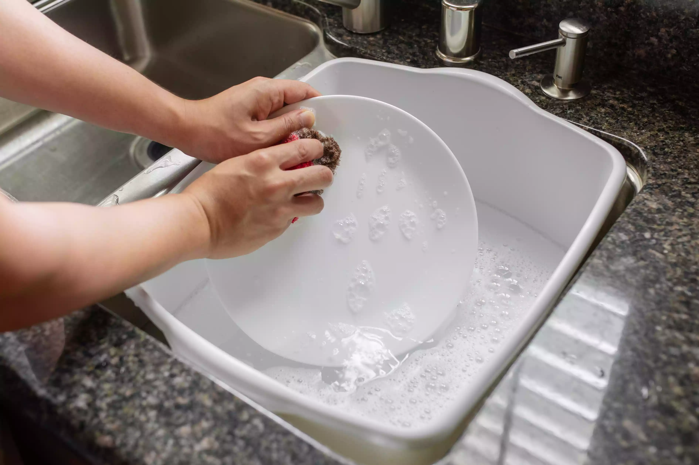

This is the part that everyone gruels, in order to make it easier, wash from your lightest soiled dish to your most soiled. This in turn will allow your dishes that need to be soaked the most time to ease their food residue—making this an easier cleaning process!Make sure to use soap in this process, even if you don't think you need to. Just do it.
